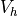
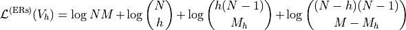
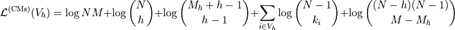
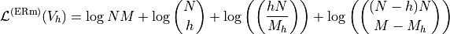
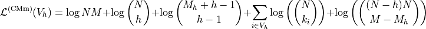

Identifying Network Hubs
Tutorial
Code to perform hub node classification derived in “Identifying hubs in directed networks” (Kirkley, 2024, https://arxiv.org/pdf/2312.03347).
Inputs are:
data: List of tuples representing the edgelist or a list of degrees for a network.
N: Number of nodes in the network.
degree_list: Boolean indicating if ‘data’ is a list of degrees.
out_degrees: Boolean indicating if hubs should be computed using out-degree values (defaults to in-degree values).
weighted: Boolean indicating if multigraph encoding should be used (applies to integer-weighted graphs as well).
Outputs:
hub nodes: List of identified hub nodes for the ER and CM encodings corresponding to the ‘weighted’ argument. The Loubar and Average baseline method results (described in https://arxiv.org/pdf/2312.03347) are also included for reference.
degrees: Degrees of the identified hub nodes, for hub encodings and baselines.
description length: The description length for the optimal encoding that uses these hubs. Not available for baselines.
compression ratio: The descriptio length of the hub encoding divided by the description length of the corresponding naive encoding. Not available for baselines.
Algorithm minimizes the following Minimum Description Length (MDL) hub identification objectives over the set of possible hub nodes :
Simple ER (Erdos-Renyi) encoding (Eq. 3):

Simple CM (configuration model) encoding (Eq. 4):

Multigraph ER encoding (Eq. 8):

Multigraph CM encoding (Eq. 9):

Network Hubs
This module provides a class and functions for identifying network hubs using various encoding methods.
All of the following functions are provided in this module and have the same general usage as described below.
Function |
Description |
|---|---|
Initialize the Network_hubs class. |
|
Compute the logarithm of the binomial coefficient. |
|
Compute the logarithm of the multiset coefficient. |
|
Network_hubs.hubs(data, N, degree_list=False, out_degrees=False, weighted=False) |
Identify hub nodes in the network. |
Reference
Description: Initialize the Network_hubs class.
Description: Compute the logarithm of the binomial coefficient.
Parameters:
- N: Total number of elements.
- K: Number of elements to choose.
- Returns:
float: Logarithm of the binomial coefficient.
Description: Compute the logarithm of the multiset coefficient.
Parameters:
- N: Total number of elements.
- K: Number of elements to choose.
- Returns:
float: Logarithm of the multiset coefficient.
Description: Identify hub nodes in the network.
Parameters:
- data: List of tuples or list of degrees.
- N: Number of nodes in the network.
- degree_list: Boolean indicating if data is a list of degrees.
- out_degrees: Boolean indicating if hubs should be computed using out-degree values.
- weighted: Boolean indicating if multigraph encoding should be used.
- Returns:
dict: Dictionary of results for the ER and CM encodings along with Loubar and Average baselines.
Demo
Example Code
Step 1: Import necessary libraries
import numpy as np
import matplotlib.pyplot as plt
import time
import ScholarCodeCollective as SCC
from ScholarCodeCollective.hub_identification import Network_hubs
import networkx as nx
import random
Step 2: Function to convert GML position format
def convert_gml_pos(gml_file, output_file):
with open(f'{gml_file}.gml', 'r') as file:
lines = file.readlines()
with open(f'{output_file}.gml', 'w') as file:
for line in lines:
stripped_line = line.strip()
if stripped_line.startswith('_pos "'):
coords = stripped_line.split('"')[1]
x, y = coords.split(',')
file.write(f' x {x.strip()}\n')
file.write(f' y {y.strip()}\n')
else:
file.write(line)
gml_file = 'kidnappings'
output_file = f'{gml_file}_converted'
convert_gml_pos(gml_file, output_file)
Step 3: Function to visualize network with hubs
def visualize_network_with_hubs(net, N, pos, hub_results, filename, color):
fig, ax = plt.subplots(figsize=(14, 16))
G = nx.DiGraph()
G.add_nodes_from(range(N))
G.add_edges_from([(e[0], e[1]) for e in net])
largest_cc = max(nx.weakly_connected_components(G), key=len) # Extract the giant component
G_sub = G.subgraph(largest_cc).copy()
in_degrees = dict(G_sub.in_degree())
max_in_degree = max(in_degrees.values()) if in_degrees else 1
node_sizes = [100 + 1000 * in_degrees[node] / max_in_degree for node in G_sub.nodes()]
nx.draw(G_sub, pos, ax=ax, with_labels=False, node_size=node_sizes, node_color='lightblue', font_size=3, font_weight='bold', alpha=0.4, arrows=True)
nx.draw_networkx_labels(G_sub, pos, labels=in_degrees, font_color='black', font_size=6, font_weight='bold')
hub_nodes = [node for node in hub_results['hub_nodes'] if node in G_sub]
hub_node_size = [100 + 1000 * in_degrees[node] / max_in_degree for node in hub_nodes]
nx.draw_networkx_nodes(G_sub, pos, ax=ax, nodelist=hub_nodes, node_color=color, node_size=hub_node_size, edgecolors='black', linewidths=2, alpha=1)
dl = hub_results['description_length']
cr = hub_results['compression_ratio']
ax.set_title(f'{filename}, DL: {dl:.2f}, CR: {cr:.2f}', fontsize=10)
ax.axis('off')
plt.tight_layout()
plt.savefig(f'{filename}.png', bbox_inches='tight', dpi=200)
plt.show()
Step 4: Read the GML file and prepare data
G = nx.read_gml(f'{output_file}.gml', label='id')
pos_x = nx.get_node_attributes(G,'x')
pos_y = nx.get_node_attributes(G,'y')
pos = {node: (pos_x[node], pos_y[node]) for node in G.nodes()}
print(G.nodes(data=True))
print("\nEdges with attributes:")
print(G.edges(data=True))
net = set((u, v, 1) for u, v in G.edges())
num_node = len(G.nodes(data=True))
nh = Network_hubs("Example Network")
Step 5: Run the network hubs algorithm for ER encoding
hub_results_er = nh.hubs(net, N=num_node, degree_list=False, weighted=False)
Step 6: Run the network hubs algorithm for CM encoding
hub_results_cm = nh.hubs(net, N=num_node, degree_list=False, weighted=False)
pos = {i: (pos_x[i], pos_y[i]) for i in range(num_node)}
Step 7: Visualize and save the ER hubs network
visualize_network_with_hubs(net, N=num_node, pos=pos, hub_results=hub_results_er['ER'], filename=f'{gml_file}_network_er_hubs', color='red')
Step 8: Visualize and save the CM hubs network
visualize_network_with_hubs(net, N=num_node, pos=pos, hub_results=hub_results_cm['CM'], filename=f'{gml_file}_network_cm_hubs', color='green')
Example Output

Kidnappings network (giant component only, for simpler visualization) with hubs identified with the ERs encoding. Non-hub nodes are colored light blue, while hub nodes are in red. The nodes are labelled with their in-degree values, and the optimal description length (DL) and compression ratio (CR) of the encoding are specified at the top of the figure.
Kidnappings network with hubs identified with the ERs encoding. Non-hub nodes are colored light blue, while hub nodes are in green.
Paper source
If you use this algorithm in your work, please cite:
A. Kirkley, Identifying hubs in directed networks. Physical Review E [Editor’s Suggestion] 109, 034310 (2024). Paper: https://arxiv.org/abs/2312.03347